Computadora
Actividades
Memorizar 
Memorizar es un juego que consiste en encontrar los pares. Es diferente de otros juegos de memoria ya que usa preguntas y respuestas, aunque también tiene el modo normal en el que simplemente tienes que encontrar los pares.
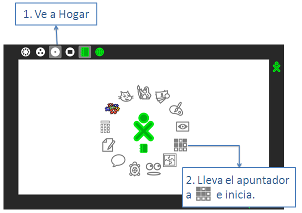
¿Para qué sirven las cosas de la pantalla?
Al abrir el juego aparece una ventana como la siguiente: :
Jugar
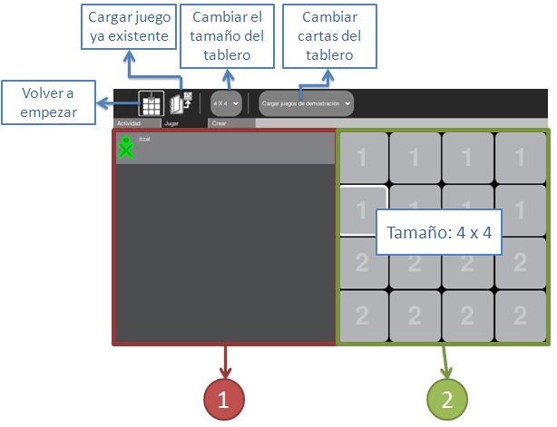
Volver a empezar:
Cuando vuelves a empezar se cierran todas las cartas que ya habías abierto y se vuelven a mezclar las preguntas y las respuestas.
Cargar juego ya existente:
Sirve cuando haz creado tu propio tablero, más adelante veremos como.
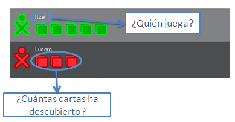
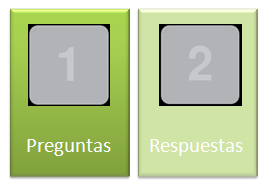
Al abrir el juego aparece seleccionado Jugar pero también están las opciones Actividad y Crear. Crear sirve para crear tableros nuevos y eso se explicará más adelante. Actividad tiene las siguientes opciones:
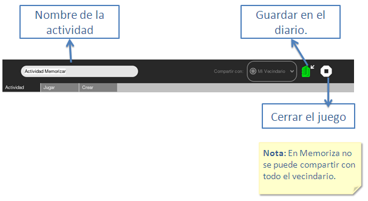
¿Qué puedo hacer con Memoriza?
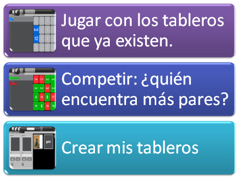
¿Cómo juego con los tableros que ya existen?
Al abrir el juego te aparecerá el juego de Sumas, para jugar con otros tableros ve a Jugar y luego elije Cargar juego de demostración aperarán otros juegos.
¿Cómo puedo competir con mis amigos?
Paso 1. Abre el tablero que quieras usar para competir.
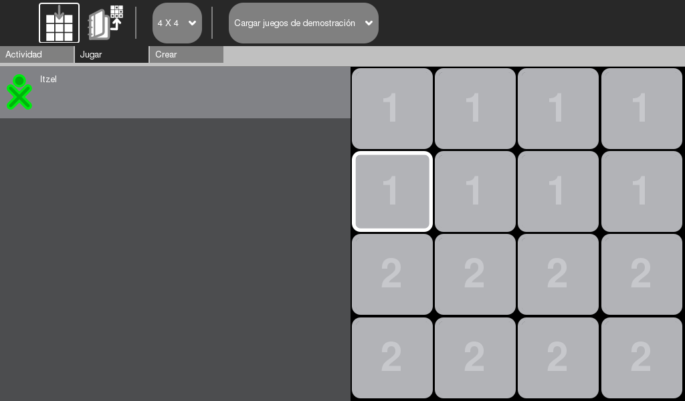
Paso 2. Ve a Grupo ahí encontrarás a tus amigos.
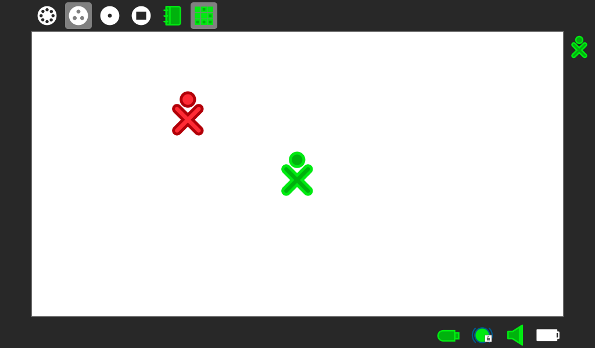
Paso 3. Pon el apuntador encima de quien quieras invitar a jugar contigo.De las opciones que aparecen elije Invitar a Actividad Memorizar
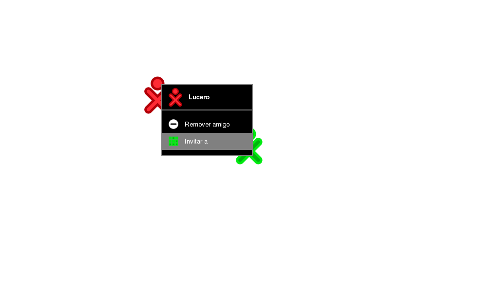
Paso 4. Tu amigo ya se ha unido. ¡Empiecen a jugar!
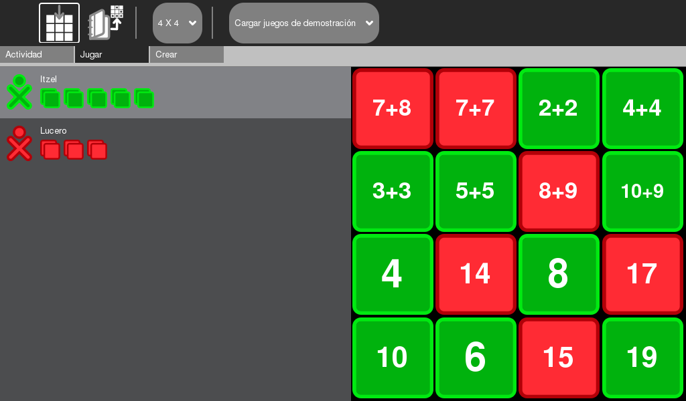
¿Cómo puedo crear mis tableros?
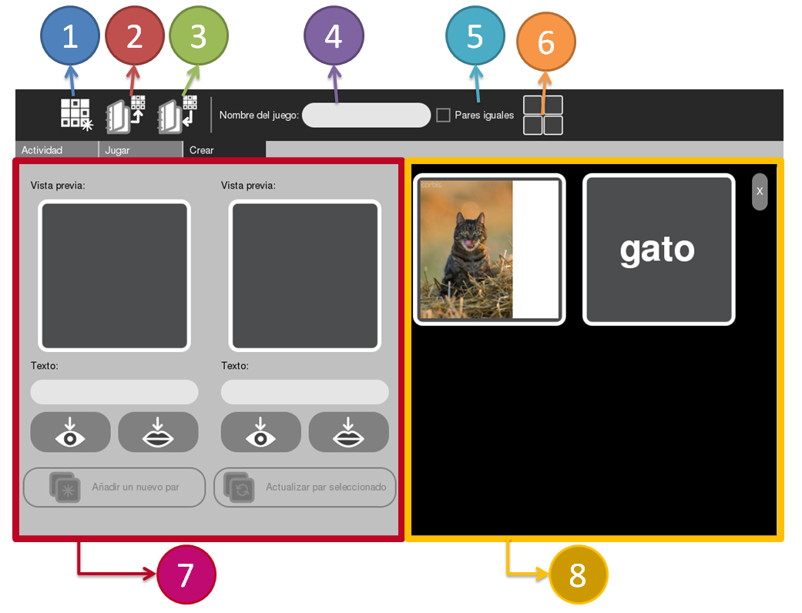
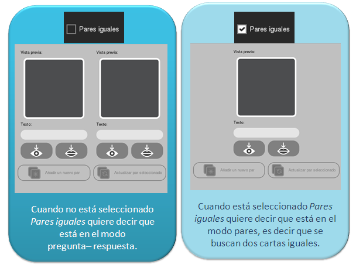
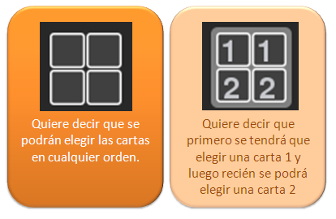
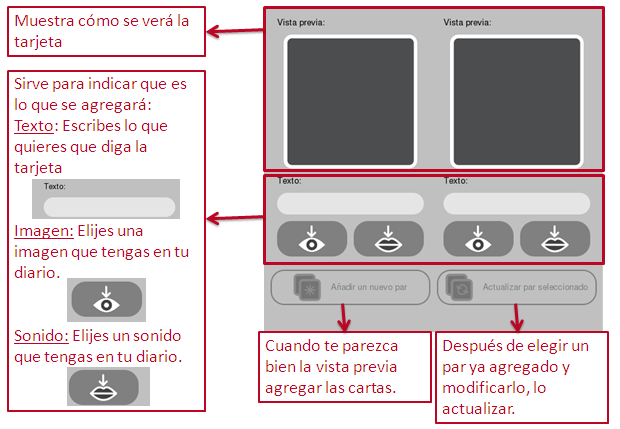
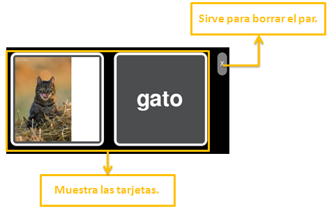
Cuando das clic encima de alguno de los pares se selecciona y lo puedes modificar. Cuando termines de modificar elije Actualizar par seleccionado.
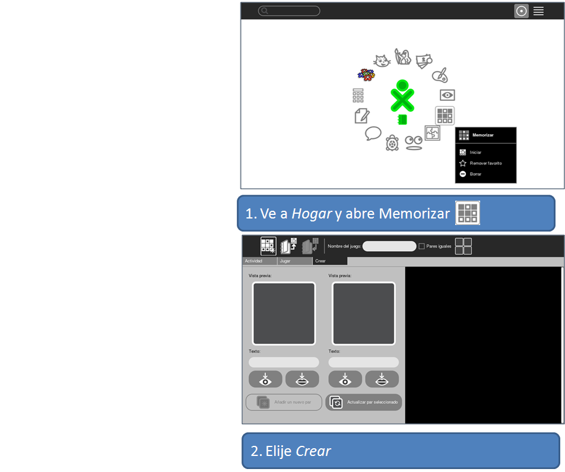
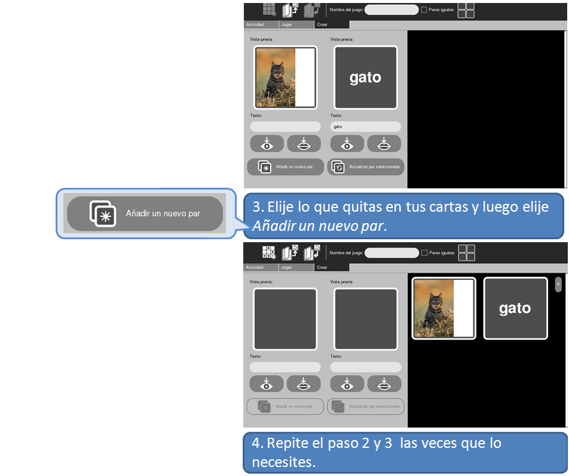
Pasos para abrir un tablero que he creado
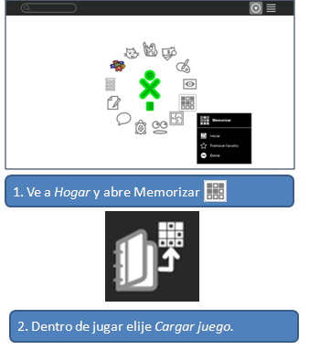
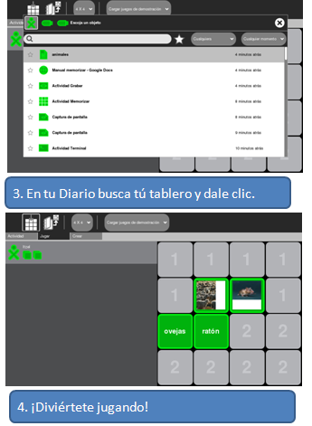